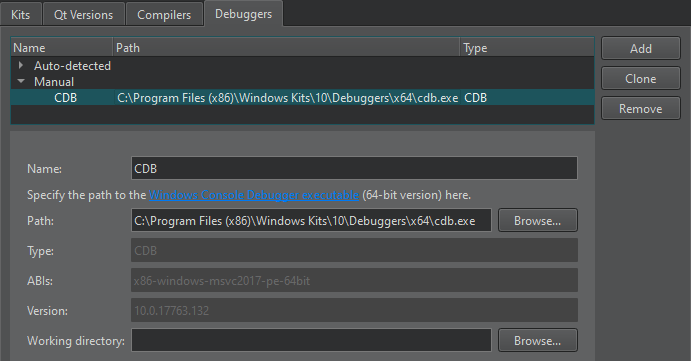

Debugging
You can use debuggers to:
- Debug executable binary files - GNU Symbolic Debugger (GDB), the Microsoft Console Debugger (CDB), and the debugger of the low level virtual machine (LLVM) project, LLDB.
- Debug QML and Java code and Qt Quick applications - QML/JavaScript debugger.
- Debug Python source code - PDB.
Setting Up the Debugger
Qt Creator automatically selects a suitable debugger for each kit from the ones found on your system. You can select another kit. To specify the debugger and compiler to use for each kit, go to Preferences > Kits.

You need to set up the debugger only if the automatic setup fails because the debugger is missing (for example, you must install the CDB debugger on Windows yourself) or because Qt Creator does not support the installed version. For example, when your system does not have GDB installed or the installed version is outdated, and you want to use a locally installed replacement instead.
To change the debugger in an automatically detected kit, go to Preferences > Kits > Clone to create a copy of the kit, and change the parameters in the cloned kit. Make sure to enable the cloned kit for your project.
If the debugger you want to use is not automatically detected, go to Preferences > Kits > Debuggers > Add to add it.

To use the debugging tools for Windows, you must install them. Optionally, you can set up the Microsoft Symbol Server if you need symbol information from Microsoft modules that is not found locally.
For more information, see Supported Debuggers and CDB Paths.
Launching the Debugger
The debuggers run in various operating modes depending on where and how you start and run the debugged process. Some of the modes are only available for a particular operating system or platform:
- Start internal to debug applications developed inside Qt Creator, such as a Qt Widgets-based application. This is the default start mode for most projects, including all projects using a desktop Qt version and plain C++ projects.
- Start external to start and debug processes without a proper Qt Creator project setup, either locally or on a remote machine.
- Attach to debug processes already started and running outside Qt Creator, either locally or on a remote machine.
- Core to debug crashed processes on Unix.
- Post-mortem to debug crashed processes on Windows.
In general, F5 and the Start Debugging of Startup Project button start the operating mode that fits the context. So, for a C++ application that uses the MinGW toolchain targeting desktop Windows, the GDB engine starts in start internal mode. For a QML application that uses C++ plugins, a mixed QML/C++ engine starts, with the C++ parts being handled by GDB and GDB server remote debugging.
Change the run configuration parameters (such as Run in Terminal) in the run settings of the project, or select options from the Debug > Start Debugging menu to select other modes of operation.
GDB Run Modes
The GDB debugger runs in different modes to cope with the variety of supported platforms and environments:
- Plain mode debugs locally started processes that do not need console input.
- Terminal mode debugs locally started processes that need a console.
- Attach mode debugs local processes started outside Qt Creator.
- Core mode debugs core files generated from crashes.
- Remote mode interacts with the GDB server running on Linux.
Stopping Applications
You can interrupt a running application before it terminates or to find out why the application does not work correctly. Set breakpoints to stop the application for examining and changing variables, setting new breakpoints or removing old ones, and then continue running the application.
Once the application starts running under the control of the debugger, it behaves and performs as usual.
To interrupt a running C++ application, go to Debug > Interrupt. The debugger automatically interrupts the application when it hits a breakpoint.
Once the application stops, Qt Creator:
- Retrieves data representing the call stack at the application's current position.
- Retrieves the contents of local variables.
- Examines expressions.
- Updates the Registers, Modules, and Disassembler views if you are debugging C++ based applications.
You can examine and change variables, set or remove breakpoints, and then continue running the application.
Examining Data
When the application stops, you can examine certain data in the debugger. The availability of data depends on the compiler settings when compiling the application and the exact location where the application stops.
Unexpected events are called exceptions and the debugger can stop the application when they occur. Going to the location in the code where the exception occurred helps you investigate the problem and find ways to fix it.
If you have a variable that shows text, but the application does not display it correctly, for example, your data might be incorrect or the code that sets the display text might do something wrong. You can step through the code and examine changes to the variable to find out where the error occurs.
The following video shows how to examine variable values:
Remote Debugging
Qt Creator makes remote debugging easy. In the common case where the remote machine already has a debug server like GDBserver installed and remote execution of an application is already set up and works by selecting the Run button (or Ctrl+R), debugging can be started by selecting the Debug button (or F5).
In this case, Qt Creator launches and connects the debug server and the application on the remote machine and the actual debugger on the development host in the right order automatically.
For some exceptional cases where this fully automated setup and execution of remote debugging is not possible, Qt Creator offers semi-automatic solutions, see Debug remotely with GDB and Debug remotely with CDB.
Using Debugging Helpers
To show complex structures, such as QObjects or associative containers, in a clear and concise manner, Qt Creator uses Python scripts that are called debugging helpers.
Qt Creator ships with debugging helpers for more than 200 of the most popular Qt classes, standard C++ containers, and smart pointers, covering the usual needs of a C++ application developer out-of-the-box.
You can customize and add debugging helpers.
QML and Qt Quick
When debugging a Qt Quick application, you can inspect the state of the application while debugging JavaScript functions. You can set breakpoints, view call stack trace, and examine locals and expressions. While the application is running, you can inspect QML objects and user interfaces, as well as execute JavaScript expressions.
For more information, see Debugging Qt Quick projects and Tutorial: Qt Quick debugging.
See also Tutorial: C++ debugging, How To: Debug, Debuggers, Debugger, and Kits.